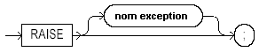

Oracle PL/SQL
Date de publication : Avril 2004 ,
Date de mise a jour : Juillet 2004
1. Le bloc PL/SQL
1.1. La section déclarative
1.2. La section exécution
1.2.1. Assignation
1.2.2. OPEN
1.2.3. OPEN FOR
1.2.4. CLOSE
1.2.5. COMMIT
1.2.6. EXECUTE IMMEDIATE
1.2.7. EXIT
1.2.8. FETCH
1.2.9. FORALL
1.2.10. GOTO
1.2.11. IF
1.2.12. CASE
1.2.13. FOR (curseur)
1.2.14. FOR, LOOP, WHILE
1.2.15. NULL
1.2.16. RAISE
1.2.17. RETURN
1.2.18. SAVEPOINT
1.2.19. ROLLBACK
1.2.20. SELECT INTO
1.2.21. Instruction SQL
1.2.22. Les curseurs explicites
1.2.23. Portée des variables
1.3. La section de gestion des erreurs
1. Le bloc PL/SQL
PL/SQL est un langage structuré en blocs, constitués d'un ensemble d'instructions.
Un bloc PL/SQL peut être "externe", on dit alors qu'il est anonyme, ou alors stocké dans la base de données sous forme de procédure, fonction ou trigger.
un bloc PL/SQL est intégralement envoyé au moteur PL/SQL, qui traite chaque instruction PL/SQL et sous-traite les instructions purement SQL au moteur SQL, afin de réduire le trafic réseau.
Syntaxe d'un bloc PL/SQL
Chaque bloc PL/SQL peut être constitué de 3 sections :
- Une section facultative de déclaration et initialisation de types, variables et constantes
- Une section obligatoire contenant les instructions d'exécution
- Une section facultative de gestion des erreurs
[DECLARE
… déclarations et initialisation]
BEGIN
… instructions exécutables
[EXCEPTION
… interception des erreurs]
END;
Un bloc PL/SQL minimum peut être représenté de la façon suivante :
BEGIN
Null ;
END ;
Le mot clé BEGIN détermine le début de la section des instructions exécutables
Le mot clé END; indique la fin de la section des instructions exécutables
Une seule instruction figure dans ce bloc : Null; qui ne génère aucune action
Ce bloc PL/SQL ne fait donc absolument rien !
La section déclarative (facultative) d'un bloc débute par le mot clé DECLARE
Elle contient toutes les déclarations des variables qui seront utilisées localement par la section exécutable, ainsi que leur éventuelle initialisation.
DECLARE
LC$Chaine VARCHAR2(15) := 'Salut Monde' ;
BEGIN
DBMS_OUTPUT.PUT_LINE( LC$Chaine ) ;
END ;
Une variable LC$Chaine est déclarée de type VARCHAR2(15) et initialisée avec la valeur 'Salut Monde' ;
Dans la section exécutable, cette variable est transmise à la fonction DBMS_OUTPUT() pour être affichée à l'écran
Cette section ne peut pas contenir d'instructions exécutables. Toutefois, il est possible de définir dans cette section des procédures ou des fonctions contenant une section exécutable.
Toute variable doit avoir été déclarée avant de pouvoir être utilisée dans la section exécutable.
La section de gestion des erreurs (facultative) débute par le mot clé EXCEPTION
Elle contient le code exécutable mis en place pour la gestion des erreurs
Lorsqu'une erreur intervient dans l'exécution, le programme est stoppé et le code erreur est transmis à cette section
DECLARE
LC$Chaine VARCHAR2(15) := 'Hello World' ;
BEGIN
DBMS_OUTPUT.PUT_LINE( LC$Chaine ) ;
EXCEPTION
When OTHERS then
Null ;
END ;
Les erreurs doivent être interceptées avec le mot clé WHEN suivi du code erreur ciblé. Ici, le code OTHERS qui définit toutes les erreurs non interceptées individuellement par les clauses WHEN précédentes.
Cette section peut elle-même contenir d'autres blocs PL/SQL
Les blocs PL/SQL peuvent être imbriqués les uns dans les autres
DECLARE
…
BEGIN
DECLARE
…..
BEGIN
……
BEGIN
………
END ;
………
END ;
……..
END ;
1.1. La section déclarative
Vous pouvez déclarer dans cette section tous les types, variables et constantes nécessaires à l'exécution du bloc.
Ces variables peuvent être de n'importe quel type SQL ou PL/SQL ( voir le chapitre Variables, types et littéraux).
Leur initialisation, facultative, s'effectue avec l'opérateur :=
DECLARE
LN$Nbre NUMBER(3) := 0 ;
LD$Date DATE := SYSDATE ;
LC$Nom VARCHAR2(10) := 'PL/SQL' ;
Une constante est une variable dont l'initialisation est obligatoire et dont la valeur ne pourra pas être modifiée en cours d'exécution
Elle est déclarée avec le mot clé : CONSTANT qui doit précéder le type
DECLARE
LN$Pi CONSTANT NUMBER := 3. 1415926535 ;
PL/SQL n'est pas sensible à la casse. Pour lui les expressions suivantes sont équivalentes :
NOM_VARIABLE NUMBER ;
Nom_Variable Number ;
nom_variable number ;
1.2. La section exécution
Délimitée par les mots clé BEGIN et END; elle contient les instructions d'exécution du bloc PL/SQL, les instructions de contrôle et d'itération,
l'appel des procédures et fonctions, l'utilisation des fonctions natives, les ordres SQL, etc.
Chaque instruction doit être suivi du terminateur d'instruction ;
Voici la liste des instructions que cette section peut contenir
1.2.1. Assignation
L'assignation d'une valeur à une variable peut être faite de 2 façons différentes
- En utilisant l'opérateur :=
Ma_variable := 10 ;
Ma_chaine := 'Chaîne de caractères' ;
- Par l'intermédiaire d'un ordre SELECT … INTO ou FETCH … INTO
Declare
LC$Nom_emp EMP.ENAME%Type ;
Cursor C_EMP Is
Select
ename
From
EMP
Where
Empno = 1014
;
Begin
Select
ename
Into
LC$Nom_emp
From
EMP
Where
Empno = 1014
;
Open C_EMP ;
Fetch C_EMP Into LC$Nom_emp ;
Close C_EMP ;
End ;
1.2.2. OPEN
Ouverture d'un curseur SQL
nom curseur représente le nom donné au curseur qui permettra de le référencer dans les instructions suivantes
paramètres du curseur représente la liste des paramètres transmis au curseur
le curseur doit avoir été préalablement défini dans la section déclarative
Declare
LC$Nom_emp EMP.ENAME%Type ;
Cursor C_EMP ( LN$Numemp IN EMP.EMPNO%Type ) Is
Select
ename
From
EMP
Where
Empno = LN$Numemp
;
Begin
Open C_EMP ( 1024 );
Fetch C_EMP Into LC$Nom_emp ;
Close C_EMP ;
End ;
1.2.3. OPEN FOR
Ouverture d'un curseur SQL incluant l'ordre select correspondant.
La déclaration préalable du curseur dans la section déclarative n'est pas nécessaire
Declare
LC$Nom_emp EMP.ENAME%Type ;
Begin
Open C_EMP For 'Select ename From EMP Where empno = 1024' ;
Fetch C_EMP Into LC$Nom_emp ;
Close C_EMP ;
End ;
1.2.4. CLOSE
Cette instruction est utilisée pour fermer un curseur préalablement ouvert avec l'instruction OPEN
CLOSE(nom_curseur)
Après cette instruction, le curseur n'est plus valide et toute instruction s'y reportant génèrera une erreur
(voir exemple précédent)
1.2.5. COMMIT
Cette instruction permet d'enregistrer en base toutes les modifications effectuées au cours de la transaction
Le mot clé WORK est facultatif et n'a aucun effet particulier
Un commentaire d'un maximum de 50 caractères peut apparaître entre apostrophes derrière le mot clé COMMENT
1.2.6. EXECUTE IMMEDIATE
Cette instruction permet d'exécuter du SQL dynamique
-> Pour une explication détaillée de cette instruction, reportez-vous à l'article sur le sql dynamique natif
1.2.7. EXIT
Cette instruction permet de quitter une structure itérative
label facultatif permet de nommer précisément la structure dont on veut sortir.
expression booléenne permet de spécifier une condition de sortie
Exit saute à l'instruction suivant le mot clé END LOOP;
Dans le cas de boucles imbriquées, l'indication d'un label permet de quitter tout ou partie des boucles imbriquées
SQL> Declare
2 LN$Num pls_integer := 0 ;
3 Begin
4 Loop
5 LN$Num := LN$Num + 1 ;
6 dbms_output.put_line( to_char( LN$Num ) ) ;
7 EXIT WHEN LN$Num > 3 ;
8 End loop ;
9 End ;
10 /
1
2
3
4
Procédure PL/SQL terminée avec succès.
Lorsque le test effectué (LN$Num > 3) est vérifié (TRUE), la boucle Loop … End loop est quittée
SQL> Declare
2 LN$I pls_integer := 0 ;
3 LN$J pls_integer := 0 ;
4 Begin
5 <<boucle1>>
6 Loop
7 LN$I := LN$I + 1 ;
8 Loop
9 LN$J := LN$J + 1 ;
10 dbms_output.put_line( to_char( LN$I ) || ',' || to_char( LN$J ) ) ;
11 EXIT boucle1 WHEN LN$J > 3 ;
12 End loop ;
13 End loop ;
14 End ;
15 /
1,1
1,2
1,3
1,4
Procédure PL/SQL terminée avec succès.
Dans cet exemple, l'instruction EXIT suivie du label boucle1 permet de quitter les deux boucles imbriquées
1.2.8. FETCH
Cette instruction permet de ramener une ligne d'un curseur préalablement ouvert avec l'instruction OPEN ou OPEN FOR
nom curseur représente le nom d'un curseur préalablement ouvert avec l'instruction OPEN ou OPEN FOR
nom variable curseur représente le nom d'une variable curseur
nom variable curseur hôte représente le nom d'une variable curseur transmise par un programme tiers (ex : Pro*C, Pro*Cobol, etc.)
variable représente le nom d'une variable préalablement définie dans la section déclarative, qui doit être du même type que la colonne ramenée par l'instruction Select
enregistrement représente le nom d'un enregistrement préalablement défini dans la section déclarative qui doit être du même type que la ligne ramenée par l'instruction Select
nom collection représente le nom d'une collection préalablement définie dans la section déclarative
nom tableau hôte représente le nom du tableau transmis par un programme tiers
Si l'instruction FETCH ne ramène plus de ligne (fin du curseur) l'attribut %NOTFOUND prend la valeur TRUE et l'attribut %FOUND prend la valeur FALSE
-> Pour voir des exemples, reportez-vous à la section Les curseurs explicites (1.2.22)
1.2.9. FORALL
Cette instruction permet de générer des ordres SQL de masse basés sur le contenu d'une collection
variable index représente l'indice de la collection sur laquelle porte l'instruction FORALL
borne début représente la valeur d'indice de départ
borne fin représente la valeur d'indice de fin
instruction sql doit être un ordre SQL de type INSERT, UPDATE ou DELETE
(10g)
FORALL i IN INDICES OF nom_collection
permet de ne traiter que les indices valorisés de la collection (non forcément consécutifs comme il était impératif dans les versions précédentes)
Pour voir des exemples, reportez-vous au chapitre 5 Collections et enregistrements
1.2.10. GOTO
Cette instruction permet d'exécuter un saut dans le code vers le label precisé
Une instruction valide doit suivre la déclaration du label
SQL> Declare
2 LN$I pls_integer := 0 ;
3 LN$J pls_integer := 0 ;
4 Begin
5 Loop
6 LN$I := LN$I + 1 ;
7 Loop
8 LN$J := LN$J + 1 ;
9 dbms_output.put_line( to_char( LN$I ) || ',' || to_char( LN$J ) ) ;
10 If LN$J > 3 Then GOTO sortie ; End if ;
11 End loop ;
12 End loop ;
13 <<sortie>>
14 null ;
15 End ;
16 /
1,1
1,2
1,3
1,4
Procédure PL/SQL terminée avec succès.
1.2.11. IF
Cette instruction permet de faire des tests conditionnels
expression booléenne représente un test générant un booléen TRUE ou FALSE
Seuls les mots clé IF et END IF; sont obligatoires. Les clauses ELSIF et ELSE sont facultatives
SQL> Declare
2 LN$I pls_integer := 0 ;
3 LN$J pls_integer := 0 ;
4 Begin
5 Loop
6 LN$I := LN$I + 1 ;
7 Loop
8 LN$J := LN$J + 1 ;
9 If LN$J = 1 Then
10 dbms_output.put_line( '1' ) ;
11 Elsif LN$J = 2 Then
12 dbms_output.put_line( '2' ) ;
13 Else
14 dbms_output.put_line( '3' ) ;
15 goto sortie ;
16 End if ;
17 End loop ;
18 End loop ;
19 <<sortie>>
20 null ;
21 End ;
22 /
1
2
3
Procédure PL/SQL terminée avec succès.
1.2.12. CASE
Cette instruction permet de mettre en place des structures de test conditionnel de type IF .. ELSE .. END IF,
à la grande différence qu'elle est utilisable dans les requêtes SQL
2 syntaxes sont possibles
[<<label>>]
CASE opérateur
{ WHEN contenu_opérateur THEN { instruction;} ... }...
[ELSE { instruction;}...]
END CASE [label];
[<<label>>]
CASE { WHEN expression_booléenne THEN { instruction;} ... }...
[ELSE { instruction;}...]
END CASE [label];
opérateur peut être n'importe quel type PL/SQL à l'exception des objets suivants :
- BLOB
- BFILE
- Type objet
- Enregistrement
- Collection (NESTED TABLE, INDEX-BY TABLE, VARRAY)
Pour le CASE simple, chaque mot clé WHEN vérifie l'égalité entre opérateur et contenu_opérateur. Dans l'affirmative, l'instruction suivant le mot clé THEN est exécutée, puis la structure CASE est quittée et l'exécution du programme est reprise après le mot clé END CASE;
SQL> Declare
2 LN$Num pls_integer := 0 ;
3 Begin
4 Loop
5 LN$Num := LN$Num + 1 ;
6 CASE LN$Num
7 WHEN 1 Then dbms_output.put_line( '1' ) ;
8 WHEN 2 Then dbms_output.put_line( '2' ) ;
9 WHEN 3 Then dbms_output.put_line( '3' ) ;
10 ELSE
11 EXIT ;
12 END CASE ;
13 End loop ;
14 End ;
15 /
1
2
3
Procédure PL/SQL terminée avec succès.
Exemple de CASE de recherche
SQL> Declare
2 LN$Num pls_integer := 0 ;
3 Begin
4 Loop
5 LN$Num := LN$Num + 1 ;
6 CASE
7 WHEN LN$Num between 1 and 3 Then dbms_output.put_line( To_char( LN$Num ) || ' -> 1-3' ) ;
8 WHEN LN$Num < 5 Then dbms_output.put_line( To_char( LN$Num ) || ' < 5' ) ;
9 ELSE dbms_output.put_line( To_char( LN$Num ) || ' >= 5' ) ;
10 END CASE ;
11 exit when LN$Num = 5 ;
12 End loop ;
13 End ;
14 /
1 -> 1-3
2 -> 1-3
3 -> 1-3
4 < 5
5 >= 5
Procédure PL/SQL terminée avec succès.
Cette fois l'opérateur est précisé sur chaque ligne WHEN
Il ne s'agit alors plus d'un simple test d'égalité, mais de n'importe quelle expression booléenne restituant un résultat TRUE ou FALSE.
On observe également que le débranchement dans une clause WHEN est exclusif. En effet, dans chaque itération de boucle, la variable LN$Num est inférieure à 5, mais n'est prise en compte dans la deuxième clause WHEN que lorsque la première n'est plus vérifiée
Pour le CASE de recherche, l'omission de la clause ELSE provoque une erreur
SQL> Declare
2 LN$Num pls_integer := 0 ;
3 Begin
4 Loop
5 LN$Num := LN$Num + 1 ;
6 CASE
7 WHEN LN$Num between 1 and 3 Then dbms_output.put_line( To_char( LN$Num ) || ' -> 1-3' ) ;
8 WHEN LN$Num < 5 Then dbms_output.put_line( To_char( LN$Num ) || ' -> < 5' ) ;
9 END CASE ;
10 exit when LN$Num = 5 ;
11 End loop ;
12 End ;
13 /
1 -> 1-3
2 -> 1-3
3 -> 1-3
4 -> < 5
Declare
*
ERREUR à la ligne 1 :
ORA-06592: CASE not found while executing CASE statement
ORA-06512: at line 6
1.2.13. FOR (curseur)
Cette instruction permet de gérer un curseur sans utiliser les ordres OPEN, FETCH et CLOSE
enregistrement représente un nom de variable de type curseur implicite.
nom curseur représente le nom d'un curseur préalablement défini dans la section déclarative
SQL> Declare
2
3 CURSOR C_EMP IS
4 Select
5 *
6 From
7 EMP
8 Where
9 job = 'CLERK'
10 ;
11
12 Begin
13 For Cur IN C_EMP Loop
14 dbms_output.put_line( To_char( Cur.empno ) || ' - ' || Cur.ename ) ;
15 End loop ;
16 End ;
17 /
7369 - SMITH
7876 - ADAMS
7900 - JAMES
7934 - MILLER
Procédure PL/SQL terminée avec succès.
La variable de curseur implicite Cur, non définie dans la section déclarative, doit être utilisée pour manipuler dans la boucle,
les objets du curseur (To_char( Cur.empno ),Cur.ename)
Après l'instruction END LOOP; l'utilisation de cette variable génère une erreur
Avec cette syntaxe, l'utilisation des instructions OPEN, FETCH et CLOSE est inutile
Instruction FOR et curseur paramétré
SQL> Declare
2
3 CURSOR C_EMP ( PC$Job IN EMP.job%Type ) IS
4 Select
5 *
6 From
7 EMP
8 Where
9 job = PC$Job
10 ;
11
12 Begin
13 For Cur IN C_EMP( 'SALESMAN' ) Loop
14 dbms_output.put_line( To_char( Cur.empno ) || ' - ' || Cur.ename ) ;
15 End loop ;
16 End ;
17 /
7499 - ALLEN
7521 - WARD
7654 - MARTIN
7844 - TURNER
Procédure PL/SQL terminée avec succès.
Le passage des paramètres s'effectue sur le curseur déclaré (C_EMP) et non sur la variable curseur (Cur)
1.2.14. FOR, LOOP, WHILE
Ces instructions déclarent une structure de type itérative (boucle)
Trois syntaxes sont possibles
- LOOP instruction;[instruction;[...]] END LOOP;
Cette syntaxe met en place une boucle simple ou aucune condition de sortie n'est indiquée
Il faut donc une instruction EXIT pour sortir de ce type de boucle
SQL> Declare
2 LN$I pls_integer := 0 ;
3 Begin
4 Loop
5 LN$I := LN$I + 1 ;
6 dbms_output.put_line( to_char( LN$I) ) ;
7 exit when LN$I > 2 ;
8 End loop ;
9 End ;
10 /
1
2
3
- WHILE expression booléenne LOOP instruction;[instruction;[...]] END LOOP;
Cette syntaxe permet de mettre en place une boucle dont la condition de test est évaluée au début.
Si expression booléenne donne le résultat FALSE, les instructions suivantes jusqu'au mot clé END LOOP; ne seront pas exécutées
SQL> Declare
2 LN$I pls_integer := 0 ;
3 Begin
4 While LN$I < 3
5 Loop
6 LN$I := LN$I + 1 ;
7 dbms_output.put_line( to_char( LN$I) ) ;
8 End loop ;
9 End ;
10 /
1
2
3
- FOR variable index IN [REVERSE] borne_début..borne_fin LOOP instruction;[instruction;[...]] END LOOP;
Cette syntaxe permet de mettre en place une boucle dont le nombre d'itérations est fixé dès l'entrée
Variable index représente le nom de la variable qui servira d'indice. Cette variable ne nécessite pas de définition préalable dans la section déclarative
Reverse permet de faire varier l'indice dans le sens contraire (décrémentation)
borne début représente l'indice de départ
borne fin représente l'indice de fin
SQL> Declare
2 LN$I pls_integer := 0 ;
3 Begin
4 For i in 1..3
5 Loop
6 dbms_output.put_line( to_char( i ) ) ;
7 End loop ;
8 End ;
9 /
1
2
3
SQL> Declare
2 LN$I pls_integer := 0 ;
3 Begin
4 For i in reverse 1..3
5 Loop
6 dbms_output.put_line( to_char( i ) ) ;
7 End loop ;
8 End ;
9 /
3
2
1
1.2.15. NULL
Cette instruction n'exécute rien et n'a aucun effet
1.2.16. RAISE
Cette instruction permet de générer une exception

nom exception représente soit le nom d'une exception prédéfinie, soit une exception utilisateur définie dans la section déclarative
SQL> Declare
2 LN$I pls_integer := 0 ;
3 LE$Fin exception ;
4 Begin
5 Loop
6 LN$I := LN$I + 1 ;
7 dbms_output.put_line( to_char( LN$I) ) ;
8 If LN$I > 2 Then
9 RAISE LE$Fin ;
10 End if ;
11 End loop ;
12 Exception
13 When LE$Fin Then
14 Null ;
15 End ;
16 /
1
2
3
Si la variable LN$I est > 2, alors on provoque le saut dans la section EXCEPTION avec l'erreur utilisateur LE$Fin
1.2.17. RETURN
Cette instruction permet de sortir d'une procédure ou d'une fonction
expression représente la valeur de retour d'une fonction. Cette valeur doit être compatible avec le type défini dans la clause RETURN de la déclaration de fonction
1.2.18. SAVEPOINT
Cette instruction permet de placer une étiquette savepoint dans le corps du code.
Elle permet au traitement d'annuler, avec l'instruction ROLLBACK, les modifications effectuées à partir de cette étiquette
1.2.19. ROLLBACK
Cette instruction permet d'annuler en base toutes les modifications effectuées au cours de la transaction
nom savepoint représente le nom d'une étiquette savepoint préalablement définie dans le corps du code avec l'instruction SAVEPOINT
Avec TO SAVEPOINT nom savepoint, l'annulation porte sur toutes les modifications effectuées à partir de l'étiquette nom savepoint
SQL> Begin
2 Insert Into EMP( empno, ename, job )
3 values( 9991, 'Dupontont', 'CLERK' ) ;
4 Insert Into EMP( empno, ename, job )
5 values( 9992, 'Duboudin', 'CLERK' ) ;
6
7 SAVEPOINT mise_a_jour ;
8
9 Update EMP Set sal = 2500 Where empno > 9990 ;
10 ROLLBACK TO SAVEPOINT mise_a_jour ;
11
12 Commit ;
13 End ;
14 /
Procédure PL/SQL terminée avec succès.
SQL> Select * From EMP Where empno > 9990 ;
EMPNO ENAME JOB MGR HIREDATE SAL COMM DEPTNO
9991 Dupontont CLERK
9992 Duboudin CLERK
Dans cet exemple, une étiquette SAVEPOINT est placée après les instructions d'insertion
Un ROLLBACK TO SAVEPOINT est ajouté après l'instruction de mise à jour
puis un COMMIT est effectué
Les insertions sont bien enregistrées en base mais pas la mise à jour
1.2.20. SELECT INTO
Séléction d'une ou de plusieurs lignes
Cette instruction permet d'exécuter un ordre Select implicite.
Cet ordre ne doit ramener qu'une ligne sous peine de générer l'exception NO_DATA_FOUND si aucune ligne n'est ramenée
ou TOO_MANY_ROWS si plus d'une ligne sont ramenées
Utilisée avec la clause BULK COLLECT, elle permet de charger une collection avec les lignes ramenées
item représente un littérale ou un nom de colonne
nom variable représente le nom d'une variable d'accueil. Son type doit être identique à celui de item
nom record représente le nom d'un enregistrement composé de champs de même type que les items ramenés
nom collection représente le nom d'une collection d'accueil
nom tableau hôte représente le nom de la variable tableau passée par un programme tiers
référence table représente la liste des tables et/ou vues de l'ordre SQL
sous-requête représente le texte d'une sous-requête SQL conforme
suite instruction représente la suite de l'ordre Select (clauses Where, Group by, Order by, etc.)
SQL> Declare
2 LN$Num EMP.empno%Type ;
3 LC$Nom EMP.ename%Type ;
4 LC$Job EMP.job%Type ;
5 Begin
6 Select
7 empno
8 ,ename
9 ,job
10 Into
11 LN$Num
12 ,LC$Nom
13 ,LC$Job
14 From
15 EMP
16 Where
17 empno = 7369
18 ;
19 End ;
20 /
Procédure PL/SQL terminée avec succès.
Dans l'exemple suivant, aucun employé ne porte le numéro 1
la requête ne ramène donc aucune ligne et génère l'exception NO_DATA_FOUND
SQL> Declare
2 LN$Num EMP.empno%Type ;
3 LC$Nom EMP.ename%Type ;
4 LC$Job EMP.job%Type ;
5 Begin
6 Select
7 empno
8 ,ename
9 ,job
10 Into
11 LN$Num
12 ,LC$Nom
13 ,LC$Job
14 From
15 EMP
16 Where
17 empno = 1
18 ;
19 End ;
20 /
Declare
*
ERREUR à la ligne 1 :
ORA-01403: Aucune donnée trouvée
ORA-06512: à ligne 7
Dans l'exemple suivant, la clause WHERE a été retirée
la requête ramène donc plusieurs lignes et génère l'exception TOO_MANY_ROWS
SQL> Declare
2 LN$Num EMP.empno%Type ;
3 LC$Nom EMP.ename%Type ;
4 LC$Job EMP.job%Type ;
5 Begin
6 Select
7 empno
8 ,ename
9 ,job
10 Into
11 LN$Num
12 ,LC$Nom
13 ,LC$Job
14 From
15 EMP
16 ;
17 End ;
18 /
Declare
*
ERREUR à la ligne 1 :
ORA-01422: l'extraction exacte ramène plus que le nombre de lignes demandé
ORA-06512: à ligne 7
Dans l'exemple suivant toute une ligne de la table EMP est chargée dans un enregistrement
SQL> Declare
2 LR$Emp EMP%Rowtype ;
3 Begin
4 Select
5 *
6 Into
7 LR$Emp
8 From
9 EMP
10 Where
11 empno = 7369
12 ;
13 End ;
14 /
Procédure PL/SQL terminée avec succès.
Dans l'exemple suivant toutes les lignes de la table EMP sont chargées dans une collection
SQL> Declare
2 TYPE TYP_TAB_EMP IS TABLE OF EMP%Rowtype ;
3 Tabemp TYP_TAB_EMP ;
4 Begin
5 Select
6 *
7 BULK COLLECT
8 Into
9 Tabemp
10 From
11 EMP
12 ;
13 For i IN Tabemp.first..Tabemp.last Loop
14 dbms_output.put_line( To_char( Tabemp(i).empno ) || ' - ' || Tabemp(i).ename ) ;
15 End loop ;
16 End ;
17 /
7369 - SMITH
7499 - ALLEN
7521 - WARD
7566 - JONES
7654 - MARTIN
7698 - BLAKE
7782 - CLARK
7788 - SCOTT
7839 - KING
7844 - TURNER
7876 - ADAMS
7900 - JAMES
7902 - FORD
7934 - MILLER
Procédure PL/SQL terminée avec succès.
1.2.21. Instruction SQL
Représente toute instruction SQL valide
1.2.22. Les curseurs explicites
Un curseur est une zone mémoire de taille fixe, utilisée par le moteur SQL pour analyser et interpréter un ordre SQL
Un curseur explicite, contrairement au curseur implicite (SELECT INTO) est géré par l'utilisateur
pour traiter un ordre Select qui ramène plusieurs lignes
Tout curseur explicite géré dans la section exécution doit avoir été déclaré dans la section déclarative
nom curseur représente le nom du curseur que l'on déclare
déclaration des paramètres(facultatif) représente la liste des paramètres transmis au curseur
instruction select représente l'ordre SQL Select d'alimentation du curseur
SQL> Declare
2
3 CURSOR C_EMP IS
4 Select
5 empno
6 ,ename
7 ,job
8 From
9 EMP
10 ;
11
12 LN$Num EMP.empno%Type ;
13 LC$Nom EMP.ename%Type ;
14 LC$Job EMP.job%Type ;
15 Begin
16 Open C_EMP ;
17 Loop
18 Fetch C_EMP Into LN$Num, LC$Nom, LC$Job ;
19 Exit When C_EMP%NOTFOUND ;
20 End loop ;
21 Close C_EMP ;
22 End ;
23 /
Procédure PL/SQL terminée avec succès.
Un curseur nommé C_EMP est déclaré avec l'ordre Select correspondant (CURSOR C_EMP IS...)
Il est ouvert avec l'instruction OPEN
lu avec l'instruction FETCH
et fermé avec l'instruction CLOSE
Un curseur est paramétrable. On peut donc utiliser le même curseur pour obtenir différents résultats
nom paramètre représente le nom de la variable paramètre
datatype représente le type SQL de la variable paramètre (doit correspondre en type avec la colonne visée)
expression représente la valeur par défaut du paramètre (doit correspondre en type avec celui du paramètre)
SQL> Declare
2
3 CURSOR C_EMP ( PN$Num IN EMP.empno%Type )IS
4 Select
5 empno
6 ,ename
7 ,job
8 From
9 EMP
10 Where
11 empno = PN$Num
12 ;
13
14 LN$Num EMP.empno%Type ;
15 LC$Nom EMP.ename%Type ;
16 LC$Job EMP.job%Type ;
17 Begin
18 Open C_EMP( 7369 ) ;
19 Loop
20 Fetch C_EMP Into LN$Num, LC$Nom, LC$Job ;
21 Exit When C_EMP%NOTFOUND ;
22 dbms_output.put_line( 'Employé ' || To_char(LN$Num) || ' ' || LC$Nom ) ;
23 End loop ;
24 Close C_EMP ;
25 Open C_EMP( 7521 ) ;
26 Loop
27 Fetch C_EMP Into LN$Num, LC$Nom, LC$Job ;
28 Exit When C_EMP%NOTFOUND ;
29 dbms_output.put_line( 'Employé ' || To_char(LN$Num) || ' ' || LC$Nom ) ;
30 End loop ;
31 Close C_EMP ;
32 End ;
33 /
Employé 7369 SMITH
Employé 7521 WARD
Procédure PL/SQL terminée avec succès.
- Déclaration d'une variable curseur
nom variable curseur représente le nom de la variable curseur déclarée
nom type représente le nom d'un type curseur
SQL> Declare
2 TYPE TYP_REF_CUR IS REF CURSOR ;
3
4 CEMP TYP_REF_CUR ;
5
6 LN$Num EMP.empno%Type ;
7 LC$Nom EMP.ename%Type ;
8 LC$Job EMP.job%Type ;
9 Begin
10 Open CEMP For 'Select empno, ename, job From EMP';
11 Loop
12 Fetch CEMP Into LN$Num, LC$Nom, LC$Job ;
13 Exit When CEMP%NOTFOUND ;
14 End loop ;
15 Close CEMP ;
16 End ;
17 /
Procédure PL/SQL terminée avec succès.
- Spécification d'un curseur
Les attributs de curseur
Chaque curseur dispose de 4 attributs
Cet attribut prend la valeur TRUE lorsque une ligne est ramenée, sinon il prend la valeur FALSE
Cet attribut prend la valeur FALSE lorsque une ligne est ramenée, sinon il prend la valeur TRUE
Cet attribut prend la valeur TRUE lorsque le curseur indiqué est ouvert, sinon il prend la valeur FALSE
Cet attribut retourne le nombre de lignes impactées par la dernière instruction SQL
1.2.23. Portée des variables
La portée ou visibilité d'une variable est limitée au bloc PL/SQL dans laquelle elle est déclarée. Elle est donc locale au bloc PL/SQL
SQL> Begin
2
3 Declare
4 LC$Ch1 varchar2(10) := 'Phrase 2';
5 Begin
6 dbms_output.put_line( 'LC$Ch1 = ' || LC$Ch1 ) ;
7 End ;
8
9 dbms_output.put_line( 'LC$Ch1 = ' || LC$Ch1 ) ;
10
11 End ;
12 /
dbms_output.put_line( 'LC$Ch1 = ' || LC$Ch1 ) ;
*
ERREUR à la ligne 9 :
ORA-06550: line 9, column 41:
PLS-00201: identifier 'LC$CH1' must be declared
ORA-06550: line 9, column 4:
PL/SQL: Statement ignored
Dans cet exemple, la variable LC$Ch1 déclarée dans le sous-bloc, n'existe plus dans le bloc principal
Dans le cas de blocs imbriqués ou une même variable est déclarée dans chaque bloc, la visibilité d'une variable se rapporte toujours à la plus proche déclaration
SQL> Declare
2 LC$Ch1 varchar2(10) := 'Phrase 1';
3 Begin
4
5 Declare
6 LC$Ch1 varchar2(10) := 'Phrase 2';
7 Begin
8 dbms_output.put_line( 'LC$Ch1 = ' || LC$Ch1 ) ;
9 End ;
10
11 dbms_output.put_line( 'LC$Ch1 = ' || LC$Ch1 ) ;
12
13 End ;
14 /
LC$Ch1 = Phrase 2
LC$Ch1 = Phrase 1
Procédure PL/SQL terminée avec succès.
1.3. La section de gestion des erreurs
Débutée par le mot clé EXCEPTION, elle contient le code mis en oeuvre pour la gestion des erreurs générées par la section d'exécution
Une erreur survenue lors de l'exécution du code déclenche ce que l'on nomme une exception. Le code erreur associé est transmis à la section EXCEPTION, pour vous laisser la possibilité de la gérer et donc de ne pas mettre fin prématurément à l'application.
Prenons l'exemple suivant :
Nous souhaitons retrouver la liste des employés dont la date d'entrée est inférieure au premier janvier 1970
SQL> Declare
2 LC$Nom EMP.ename%Type ;
3 Begin
4 Select empno
5 Into LC$Nom
6 From EMP
7 Where hiredate < to_date('01/01/1970','DD/MM/YYYY') ;
8 End ;
9 /
Declare
*
ERREUR à la ligne 1 :
ORA-01403: Aucune donnée trouvée
ORA-06512: à ligne 4
Comme la requête ne ramène aucune ligne, l'exception prédéfinie NO_DATA_FOUND est générée et transmise à la section EXCEPTION qui peut traiter le cas et poursuivre l'exécution de l'application.
L'exception NO_DATA_FOUND (ORA_01403) correspond au code erreur numérique +100.
Il existe des milliers de code erreur Oracle et il serait vain de tous leur donner un libellé.
Voici la liste des exceptions prédéfinies qui bénéficient de ce traitement de faveur :
| Exception prédéfinie |
Erreur Oracle |
Valeur de SQLCODE |
| ACCESS_INTO_NULL |
ORA-06530 |
-6530 |
| CASE_NOT_FOUND |
ORA-06592 |
-6592 |
| COLLECTION_IS_NULL |
ORA-06531 |
-6531 |
| CURSOR_ALREADY_OPEN |
ORA-06511 |
-6511 |
| DUP_VAL_ON_INDEX |
ORA-00001 |
-1 |
| INVALID_CURSOR |
ORA-01001 |
-1001 |
| INVALID_NUMBER |
ORA-01722 |
-1722 |
| LOGIN_DENIED |
ORA-01017 |
-1017 |
| NO_DATA_FOUND |
ORA-01403 |
+100 |
| NOT_LOGGED_ON |
ORA-01012 |
-1012 |
| PROGRAM_ERROR |
ORA-06501 |
-6501 |
| ROWTYPE_MISMATCH |
ORA-06504 |
-6504 |
| SELF_IS_NULL |
ORA-30625 |
-30625 |
| STORAGE_ERROR |
ORA-06500 |
-6500 |
| SUBSCRIPT_BEYOND_COUNT |
ORA-06533 |
-6533 |
| SUBSCRIPT_OUTSIDE_LIMIT |
ORA-06532 |
-6532 |
| SYS_INVALID_ROWID |
ORA-01410 |
-1410 |
| TIMEOUT_ON_RESOURCE |
ORA-00051 |
-51 |
| TOO_MANY_ROWS |
ORA-01422 |
-1422 |
| VALUE_ERROR |
ORA-06502 |
-6502 |
| ZERO_DIVIDE |
ORA-01476 |
-1476 |
Toutes les autres exceptions doivent être interceptées via leur code erreur numérique.
En plus des erreurs Oracle, vous pouvez intercepter vos propres erreurs en déclarant des variables dont le type est exception et en provoquant vous-même le saut dans la section de gestion des erreurs à l'aide de l'instruction RAISE
DECLARE
LE$Fin Exception ;
…
Begin
…..
Raise LE$Fin ;
…
EXCEPTION
WHEN LE$Fin Then
……….
END ;
Il n'est pas possible de déclarer la même exception deux fois dans le même bloc. Toutefois, dans le cas de blocs imbriqués, vous pouvez déclarer la même exception dans la section EXCEPTION de chaque bloc
DECLARE
LE$Fin Exception ;
BEGIN
DECLARE
LE$Fin Exception ;
BEGIN
...
EXCEPTION
WHEN LE$Fin Then
...
END ;
EXCEPTION
WHEN LE$Fin Then
...
END ;
Le peu d'exceptions prédéfinies vous oblige à traiter tous les autres cas dans la clause WHEN OTHERS en testant le code erreur SQL
EXCEPTION
WHEN NO_DATA_FOUND Then
...
WHEN OTHERS THEN
If SQLCODE = … Then …
Elsif SQLCODE = … Then …
...
End if ;
END;
Vous pouvez associer un code erreur Oracle à vos propres variables exception à l'aide du mot clé PRAGMA EXCEPTION_INIT, dans le cadre de la section déclarative de la façon suivante :
Nom_exception EXCEPTION ;
PRAGMA EXCEPTION_INIT(nom_exception, -code_error_oracle);
Exemple :
Lorsque l'on tente d'insérer plus de caractères dans une variable que sa déclaration ne le permet, Oracle déclenche une erreur -6502. Nous allons "nommer" cette erreur en LE$trop_long et l'intercepter dans la section exception
SQL> Declare
2 LC$Chaine varchar2(10) ;
3 LE$trop_long exception ;
4 pragma exception_init( LE$trop_long, -6502 ) ;
5 Begin
6 LC$Chaine := rpad( ' ', 30) ;
7 Exception
8 when LE$trop_long then
9 dbms_output.put_line( 'Chaîne de caractères trop longue') ;
10 End ;
11 /
Chaîne de caractères trop longue
Procédure PL/SQL terminée avec succès.
SQL>
Le code erreur numérique Oracle ayant généré la plus récente erreur est récupérable en interrogeant la fonction SQLCODE.
Le libellé erreur associé est récupérable en interrogeant la fonction SQLERRM
SQL> Declare
2 LC$Chaine varchar2(10) ;
3 Begin
4 LC$Chaine := rpad( ' ', 30) ;
5 Exception
6 when others then
7 dbms_output.put_line( 'Code erreur : ' || to_char( SQLCODE )) ;
8 dbms_output.put_line( 'libellé erreur : ' || to_char( SQLERRM )) ;
9 End ;
10 /
Code erreur : -6502
libellé erreur : ORA-06502: PL/SQL: numeric or value error: character string buffer too small
Procédure PL/SQL terminée avec succès.
Poursuite de l'exécution après l'interception d'une exception
Une fois dans la section EXCEPTION, il n'est pas possible de retourner dans la section exécution juste après l'instruction qui a généré l'erreur.
Par contre il est tout à fait possible d'encadrer chaque groupe d'instructions voire même chaque instruction avec les mots clé
BEGIN … EXCEPTION … END;
Cela permet de traiter l'erreur et de continuer l'exécution
1 Declare
2 LC$Ch1 varchar2(20) := 'Phrase longue';
3 LC$Chaine varchar2(10) ;
4 LE$trop_long exception ;
5 pragma exception_init( LE$trop_long, -6502 ) ;
6 Begin
7 Begin
8 LC$Chaine := LC$Ch1;
9 Exception
10 when LE$trop_long then
11 LC$Chaine := Substr( LC$Ch1, 1, 10 ) ;
12 End ;
13
14 dbms_output.put_line(LC$Chaine ) ;
15* End ;
16 /
Phrase lon
Procédure PL/SQL terminée avec succès.
Vous pouvez également définir vos propres messages d'erreur avec la procédure RAISE_APPLICATION_ERROR
DBMS_STANDARD.raise_application_error(numero_erreur, message[, {TRUE | FALSE}])
numero_erreur représente un entier négatif compris entre -20000 et -20999
message représente le texte du message d'une longueur maximum de 2048 octets
TRUE indique que l'erreur est ajoutée à la pile des erreurs précedentes
FALSE indique que l'erreur remplace toutes les erreurs précédentes
Du fait que cette procédure appartienne a un paquetage standard, il n'est pas nécessaire de préfixer cette procédure
L'appel de la procédure raise_application_error ne peut être exécuté que depuis une procédure stockée, et déclenche un retour immédiat au programme appelant en lui transmettant le code et le libellé de l'erreur
Propagation des exceptions
Si une exception n'est pas traitée au sein du bloc BEGIN … END; dans lequel elle est générée,
elle remonte de bloc en bloc jusqu'à ce qu'elle soit traitée ou rende la main au programme appelant.
Dans cet exemple, l'exception A est traitée dans le bloc local.
Le traitement se poursuit dans le bloc parent
Dans cet exemple, l'exception B n'est pas traitée dans le bloc local.
Elle se propage dans le bloc parent dans lequel elle est traitée
Puis la main est rendue au programme appelant
Dans cet exemple, l'exception C n'est traitée ni dans le bloc local ni dans les blocs parents
la main est rendue au programme appelant avec le code erreur
Commentaires dans les blocs PL/SQL
Pour mettre une ligne unique en commentaire, il faut la faire précéder d'un double tiret --
-- cette ligne seule est un commentaire
Pour mettre plusieurs lignes en commentaire, il faut les encadrer avec les symboles /* et */
/* toutes les lignes suivantes
sont en commentaire
elles ne seront ni compilées
ni exécutées
*/
Copyright ©2004 SheikYerbouti.
Aucune reproduction, même partielle, ne peut être faite
de ce site et de l'ensemble de son contenu : textes, documents, images, etc
sans l'autorisation expresse de l'auteur. Sinon vous encourez selon la loi jusqu'à 3 ans de prison et jusqu'à 300 000 E
de dommages et intérets. Cette page est déposée à la SACD.
|